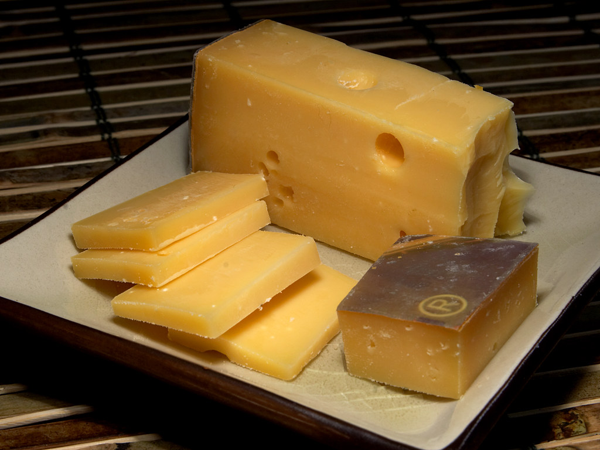

ACM-ICPC World Finals 2015 · Problem D

Of course you have all heard of the International Cheese Processing Company. Their machine for cutting a piece of cheese into slices of exactly the same thickness is a classic. Recently they produced a machine able to cut a spherical cheese (such as Edam) into slices – no, not all of the same thickness, but all of the same weight! But new challenges lie ahead: cutting Swiss cheese.
Swiss cheese such as Emmentaler has holes in it, and the holes may have different sizes. A slice with holes contains less cheese and has a lower weight than a slice without holes. So here is the challenge: cut a cheese with holes in it into slices of equal weight.
By smart sonar techniques (the same techniques used to scan unborn babies and oil fields), it is possible to locate the holes in the cheese up to micrometer precision. For the present problem you may assume that the holes are perfect spheres.
Each uncut block has size 100 × 100 × 100 where each dimension is measured in millimeters. Your task is to cut it into s slices of equal weight. The slices will be 100 mm wide and 100 mm high, and your job is to determine the thickness of each slice.
The first line of the input contains two integers n and s, where 0 ≤ n ≤ 10 000 is the number of holes in the cheese, and 1 ≤ s ≤ 100 is the number of slices to cut. The next n lines each contain four positive integers r, x, y, and z that describe a hole, where r is the radius and x, y, and z are the coordinates of the center, all in micrometers.
The cheese block occupies the points (x, y, z) where 0 ≤ x, y, z ≤ 100 000, except for the points that are part of some hole. The cuts are made perpendicular to the z axis.
You may assume that holes do not overlap but may touch, and that the holes are fully contained in the cheese but may touch its boundary.
Display the s slice thicknesses in millimeters, starting from the end of the cheese with z = 0. Your output should have an absolute or relative error of at most 10−6.
0 4
25.000000000 25.000000000 25.000000000 25.000000000
2 5 10000 10000 20000 20000 40000 40000 50000 60000
14.611103142 16.269801734 24.092457788 27.002992272 18.023645064